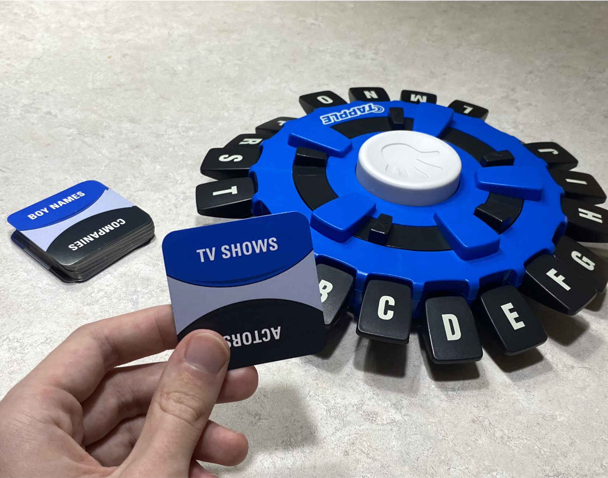
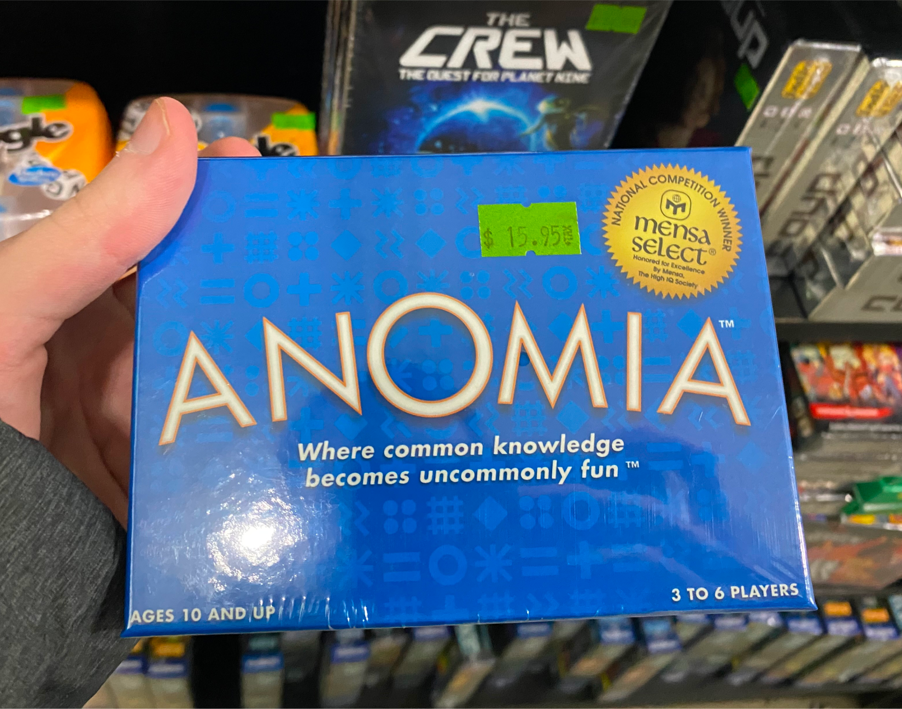
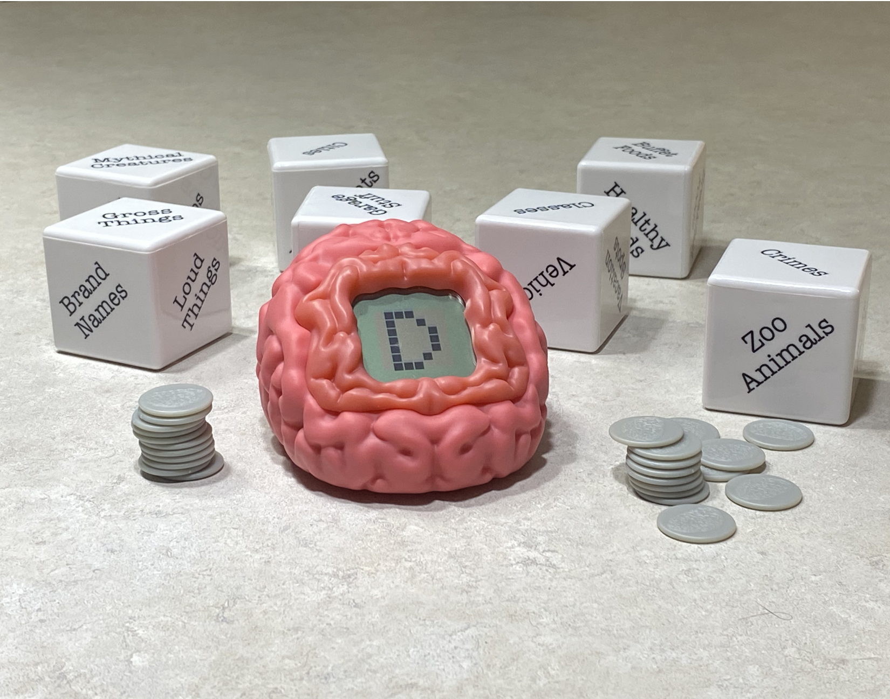

Quick Thinking
1. Tapple
Enjoy the fast-paced call-out game of Tapple! Find out who can name a word the fastest in the selected category. This game tests your ability to see who can be the fastest!
Age: 8+
Players: 2-8
2. Anomia
Quick thinking meets chaos in Anomia! Draw a card, match symbols, and race to name an example from your opponent’s category first. Sounds easy until your brain freezes! With wild cards and chain reactions, every round is unpredictable. Think fast, speak faster can you keep up?
Age: 10+
Players: 3-6
3. Brain Fart
Similar to Tapple, this game requires players to find a word starting with a letter, but it only gets harder! You must name a word starting with the letter you got while also adhering to the provided category. Will you be able to find a word before the timer runs out? Find out when playing Brain Fart!
Age: 14+
Players: 3 or more